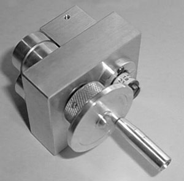

Oppegard Rubber Stripper |
Here is the excellent rubber stripper previously made by Robert Oppregard. Unfortunately his recent passing has ended production of this fine tool. The block behind the rotary cutters has an adjustable slot for changing the width of the feed (rubber). The small graduated dial behind the handle is for setting the desired width of the stripped rubber.
Copyright 1999-2000, Thayer Syme.
|
|---|---|